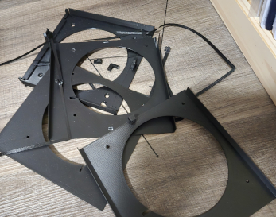
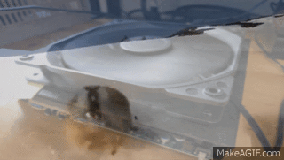

My ship had run ashore, expired AWS credits, a truly defeated morale, and no DevOps engineers in sight.
Had my journey to the land of free car washes and pizza really come to an end?
For some time it felt that way bouncing between multiple side quests. At the time I did not realize that all directions were in reality pointing towards my north star, the lemming.
Rolling back to our cold start, I was hopeless, damned cloud fuel was running out and I had not made any meaningful progress on setting up our production environment. Without success I was using Kamal to deploy to my AWS EC2 instance. Fed up and at my wits’ end, I switched to using Capistrano in hopes that it would be the heavy handed approach I thought I needed. This was plainly an attempt to address my cloud sickness symptoms, not the actual cause. Seeking any relief from the pain, my feeble gaze settled upon my helpless Pi-hole sitting next to my router.
 This Pi-hole had gone through it, a few too many router factory resets and a crazed owner who thought removing the CPU fan was a good solution to fan noise. Assuming anything other than Pi-hole running on the machine would result in a smoldering pile of ash, I began tinkering away with my 3D printer to incorporate an old computer fan into the case.
This Pi-hole had gone through it, a few too many router factory resets and a crazed owner who thought removing the CPU fan was a good solution to fan noise. Assuming anything other than Pi-hole running on the machine would result in a smoldering pile of ash, I began tinkering away with my 3D printer to incorporate an old computer fan into the case.
 In retrospect, buying or cleaning the fan would have been more economical versus the time spent in fusion-360 and pile of prototypes chilling on my floor. Our Pi-hole with a breath of fresh air was finally ready to host Project Zomboid?
This was actually the catalyst masquerading as a side quest. It showed me that like DHH mentioned, servers really are not that scary. In a small amount of time I had setup a working server.
Brimming with confidence I decided that it was time to resume the main quest!
Here we go again, I began by reflecting on my experiences deploying with Kamal and Capistrano and opted for Kamal since it required less time in the weeds setting up directories and such on the server. First, I had issues connecting to the server to even setup Kamal on the host machine. Turns out I had the IPv4 address in there when it needed the name of the host machine. Second, postgres was not happy with me trying to mount it to the host machine, which led to me refactoring my application to use sqlite3. Third, my database seeding script is not very robust and breaks every time the MLS wiki is updated, yeah, you guessed it. Fourth, SendGrid had discontinued their free tier and I happened upon this post mentioned in Ruby Weekly that helped me avoid integrating with another SMTP provider that would put a frown on my face. Finally and surprisingly easiest of all was just setting up ngrok on the host machine to serve our free static domain.
 I could finally “ship” … the lemming.
Excitedly I connected and opened up my rails console to check whether or not the Demon King’s defeat was nigh, but more importantly get a carwash potentially this weekend.
Tragically the Columbus Crew’s next game was away meaning that the location requirement was not fulfilled and my dirty car dirty much to my wife’s dismay.
Technologies Used
kamal rails ubuntu